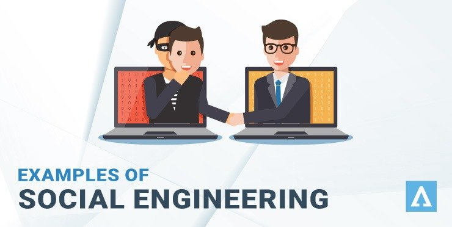
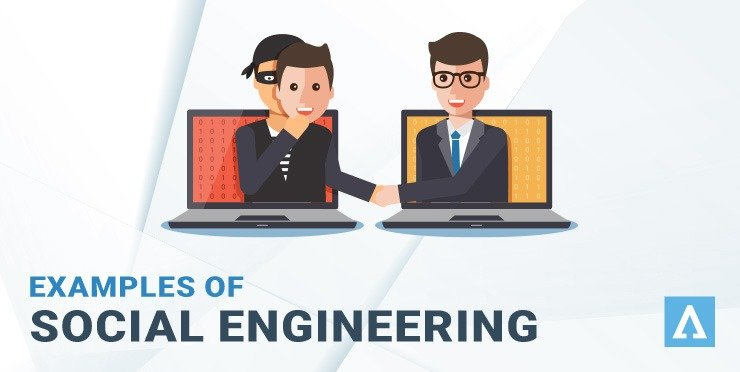

cyber security
What is cyber security?
Computer security or cyber security is a branch of technology known as information security, as applied to computers and networks. The goal of computer security includes protecting information and property from theft, corruption, or natural disasters, while allowing information and property to remain productive and accessible to its intended users. Computer system security terminology, means the collective processes and mechanisms by which sensitive and valuable information and services are protected from dissemination, tampering or breakdown caused by unauthorized activities or untrustworthy personnel, and unplanned events respectively.
Types of threats and attacks
ransomware:

It is a file encryption software that uses powerful and unique encryption algorithms to encrypt files on the target system. The (ransomware) implementers generate a unique decryption key for each of its victims and then save it to a remote server. A place that cannot be reached by application.
Data recovery even after paying the ransom.
Ransomware owners take advantage of this mechanism and usually demand a large amount of ransom from victims to provide the decryption code or decrypt the data, but such attacks have no guarantee of data recovery even after the ransom is paid.
Bot attacks:

These programs were initially designed to carry out specific tasks within a particular group. It is defined as a network or a group of devices connected to the same network to perform a task, but now it is used by bad actors and hackers who try to access the network and inject any malicious code or malware to disrupt its functioning. Some of the(bot attacks) include:
⚫Distributed Denial of Service attacks,
⚫Post spam emails,
⚫Secret data theft.
Bot attacks are generally carried out against businesses and organizations on a large scale due to their huge access to data. Through this attack, hackers can control a large number of devices and put them at risk.
Social engineering attacks

Social engineering is now a common tactic used by cybercriminals to collect sensitive user information. It may deceive you by showing you attractive advertisements, prizes, huge offers etc. and asking you to enter your personal and bank account details. All information you enter is copied there and used for financial fraud, identity fraud, etc.
It is worth mentioning here that the Zeus virus has been active since 2007 AD, which is being used as a method of social engineering attack to steal banking details of the victims. Besides the financial losses, social engineering attacks are capable of inflicting other devastating threats to the system in question.
Cryptocurrency theft
Cryptocurrency theft is the new addition to this cyber world. Cybercriminals have found their usefulness in cryptocurrency mining which involves complex computing for mining digital currencies such as Bitcoin, Ethereum, etc. among other currencies. Cryptocurrency investors and traders are the easy target for this attack.
Cryptocurrency Heist is a program designed to silently inject mining tokens into the system. Thus the hacker silently uses the CPU, GPU, and power resources of the attacking system to mine for the cryptocurrency.
This technique is especially used for mining Monero coins. Because mining is a complex process, it consumes most of the CPU resources, which affects the performance of the computer as a whole. This is also done under all your expenses; So the victim may get a huge electricity and internet bill, and it also reduces the life of the target device.
Phishing attack
Phishing is the fraudulent act of sending unsolicited emails from a legitimate source.
These letters contain an important subject with attachments such as invoice, job offers, big offers from reputable shipping services or any important mail from senior officials of different companies.
Phishing attacks are the most common cyber attack that aims to steal sensitive data. For example login credentials, credit card numbers, bank account information, etc. To avoid this you should learn more about phishing email campaigns and their preventive measures. One can also use email filtering techniques to avoid this attack.
In addition, many companies and organizations are witnessing large-scale cyber attacks and there is no stopping them. Despite continuous security analyzes and updates, the escalation of the cyber threat continues. Hence, it is useful to educate yourself on the basics of cybersecurity and its applications.
Types of threats and attacks
ransomware:
It is a file encryption software that uses powerful and unique encryption algorithms to encrypt files on the target system. The (ransomware) implementers generate a unique decryption key for each of its victims and then save it to a remote server. A place that cannot be reached by application. Data recovery even after paying the ransom.
Ransomware owners take advantage of this mechanism and usually demand a large amount of ransom from victims to provide the decryption code or decrypt the data, but such attacks have no guarantee of data recovery even after the ransom is paid.
Bot attacks:
These programs were initially designed to carry out specific tasks within a particular group. It is defined as a network or a group of devices connected to the same network to perform a task, but now it is used by bad actors and hackers who try to access the network and inject any malicious code or malware to disrupt its functioning. Some of the(bot attacks) include:
⚫Distributed Denial of Service attacks, ⚫Post spam emails, ⚫Secret data theft.
Bot attacks are generally carried out against businesses and organizations on a large scale due to their huge access to data. Through this attack, hackers can control a large number of devices and put them at risk.
Social engineering attacks
Social engineering is now a common tactic used by cybercriminals to collect sensitive user information. It may deceive you by showing you attractive advertisements, prizes, huge offers etc. and asking you to enter your personal and bank account details. All information you enter is copied there and used for financial fraud, identity fraud, etc.
It is worth mentioning here that the Zeus virus has been active since 2007 AD, which is being used as a method of social engineering attack to steal banking details of the victims. Besides the financial losses, social engineering attacks are capable of inflicting other devastating threats to the system in question.
Cryptocurrency theft
Cryptocurrency theft is the new addition to this cyber world. Cybercriminals have found their usefulness in cryptocurrency mining which involves complex computing for mining digital currencies such as Bitcoin, Ethereum, etc. among other currencies. Cryptocurrency investors and traders are the easy target for this attack.
Cryptocurrency Heist is a program designed to silently inject mining tokens into the system. Thus the hacker silently uses the CPU, GPU, and power resources of the attacking system to mine for the cryptocurrency.
This technique is especially used for mining Monero coins. Because mining is a complex process, it consumes most of the CPU resources, which affects the performance of the computer as a whole. This is also done under all your expenses; So the victim may get a huge electricity and internet bill, and it also reduces the life of the target device.
Phishing attack
Phishing is the fraudulent act of sending unsolicited emails from a legitimate source.
These letters contain an important subject with attachments such as invoice, job offers, big offers from reputable shipping services or any important mail from senior officials of different companies.
Phishing attacks are the most common cyber attack that aims to steal sensitive data. For example login credentials, credit card numbers, bank account information, etc. To avoid this you should learn more about phishing email campaigns and their preventive measures. One can also use email filtering techniques to avoid this attack.
In addition, many companies and organizations are witnessing large-scale cyber attacks and there is no stopping them. Despite continuous security analyzes and updates, the escalation of the cyber threat continues. Hence, it is useful to educate yourself on the basics of cybersecurity and its applications.